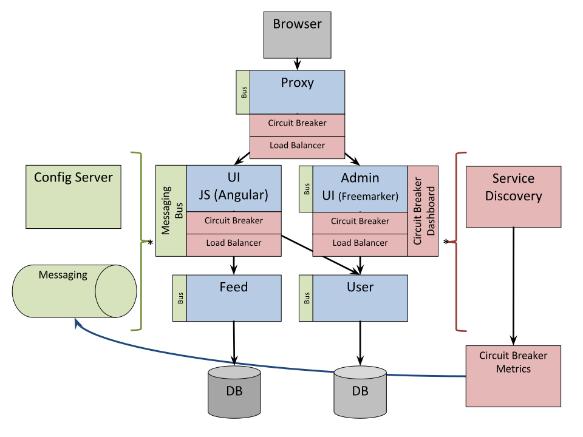

Pivotal

Cloud Native
- Distributed
- Automated
- Organizational
- Anti-fragile
I like 'cloud native' better than microservice. I think its more descriptive and doesn't have the awkwardness of having 'micro" in the name.
Cloud Native with Spring Boot
It needs to be super easy to implement and update a service:
@RestController
class ThisWillActuallyRun {
@RequestMapping("/")
String home() {
Hello World!
}
}
Example Distributed System: Minified

No Man (Microservice) is an Island
It's excellent to be able to implement a microservice really easily
(Spring Boot), but building a system that way surfaces
"non-functional" requirements that you otherwise didn't have.
There are laws of physics that make some problems unsolvable
(consistency, latency), but brittleness and manageability can be
addressed with generic, boiler plate patterns.
Emergent features of cloud native systems
Coordination of distributed systems leads to boiler plate patterns
- Distributed/versioned configuration
- Service registration and discovery
- Routing
- Service-to-service calls
- Load balancing
- Circuit Breaker
- Asynchronous
- Distributed messaging
Spring IO Platform

Example: Coordination Boiler Plate

Netflix OSS

- Eureka
- Hystrix & Turbine
- Ribbon
- Feign
- Zuul
Archaius
Curator
Asgaard
...
Example: Spring Cloud and Netflix

Configuration Server

- Pluggable source
- Git implementation
- SVN implementation
- Versioned
- Rollback-able
- Configuration client auto-configured via starter
Hystrix

Hystrix Fallback

Circuit Breaker Metrics
- Via actuator
/metrics
- Server side event stream
/hystrix.stream
- Dashboard app via
@EnableHystrixDashboard
How Netflix uses Zuul
- Authentication
- Insights
- Stress Testing
- Canary Testing
- Dynamic Routing
- Service Migration
- Load Shedding
- Security
- Static Response handling
- Active/Active traffic management
Spring Cloud Security
@EnableOAuth2Sso: Enable Single Sign On (SSO) with an OAuth2 provider declared in external properties.@EnableOAuth2Resource: Enable security using OAuth2 access tokens
Spring Cloud Bus
- Distributed actuator
- /bus/env and /bus/refresh
- uses Spring Messaging and Spring Integration
No soup for you!

Spring Cloud Future
Previews, experiments or ideas (ie: no guarantees!)
- Distributed Locks, Leader election
- Consul: Config, Discovery, Bus, Locks
- Zookeeper or etcd: Locks, Leader Election, Discovery, Config
- Zipkin for distributed tracing
- Moar Bus! Moar Messaging!
Continuous Delivery
- Microservices lend themselves to continuous delivery.
- You actually need continuous delivery to extract maximum value.
- New: ALM support in Cloudfoundry from Cloudbees
Cloudfoundry
- Environment Provisioning
- On-Demand/Automatic Scaling
- Failover/Resilience
- Routing/Front-end Load Balancing
- Monitoring
Deploying services needs to be simple and reproducible
and you don't get much more convenient than that.
(Same argument for other PaaS solutions)
Micro vs Monolithic... is NOT new
From: kt4@prism.gatech.EDU (Ken Thompson)
Subject: Re: LINUX is obsolete
Date: 3 Feb 92 23:07:54 GMT
Organization: Georgia Institute of Technology
I would generally agree that microkernels are probably the wave
of the future. However, it is in my opinion easier to implement
a monolithic kernel. It is also easier for it to turn into a
mess in a hurry as it is modified.
Regards, Ken

What's wrong with a monolith?